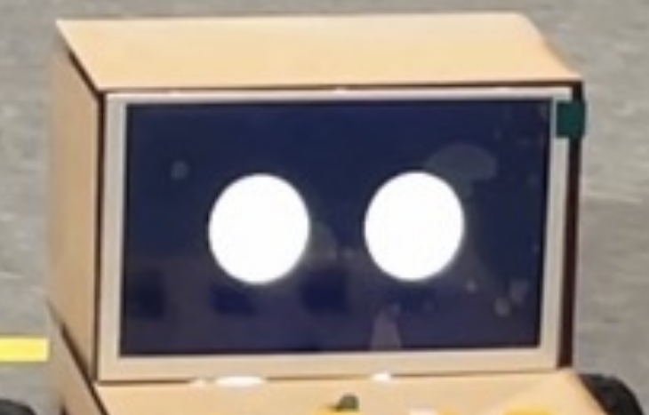

HRS 01 – Microcontroller
- Finished
- The project is based on the ATmega328PB, which provides overall system control.
HRS 02 – Motor
- Finished
- The system includes specifications for motor power requirements, speed control. Specifically, the system uses 4 regular TT motors with a motor driver from Adafruit.
HRS 03 – Display
- Finished
- The LCD is a 320x480 pixel display to show both system and alarm times, with user-friendly labels for setting modes. It communicates with the ATmega328PB through a 5-pin SPI interface.

HRS 04 - Speaker
- Finished
- The speaker generates a sound within the range of 70-90dB to wake up the user.
HRS 05 - Distance Sensor
- Finished
- A distance sensor is used to detect obstacles.
- If the distance sensor detects that the obstacle in front is less than 30 cm away, the ATmega328PB shall command the motor driver, controlling the device to turn right 90 degrees.